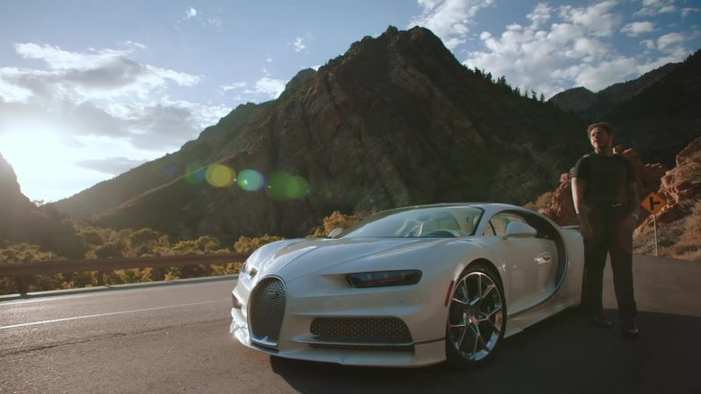

 More info
More info
 Play (k)
Play (k)


 Mute (m)
Mute (m)
 Auto-play is on
Auto-play is on
 Subtitles/closed captions unavailable
Subtitles/closed captions unavailable
 Settings
HD
Settings
HD
 Miniplayer (i)
Miniplayer (i)
 Default view (t)
Default view (t)
 Full screen (f)
Full screen (f)
Post Malone
Volume
0:12 / 2:36